バスで行く日帰りハイキング2015～Rouge Park～
2015年はカナダの自然を満喫する年となった。長いことブログをアップできないでいたが、今年行ったところを徐々にアップしていこうとおもう。
まずは10月半ばに行ったRouge Parkから。
ルージュパークはカナダでは都心部にある唯一の国立公園。トロント動物園に隣接し、トロントのダウンタウンからは公共のバスを使ってもいける。入場料は無料。ニューヨークのセントラルパークの２２倍という広大な敷地は１７００種の動植物の保護区となっている。
8つのトレイルが整備されており、ハイキングが存分に楽しめる。
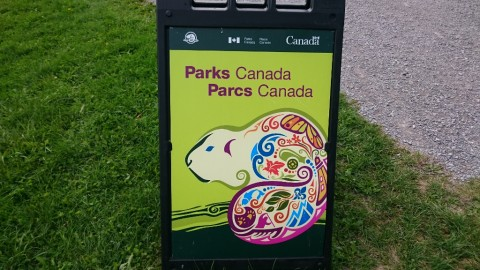
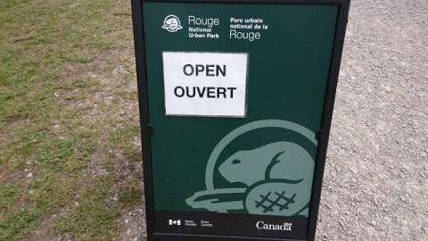
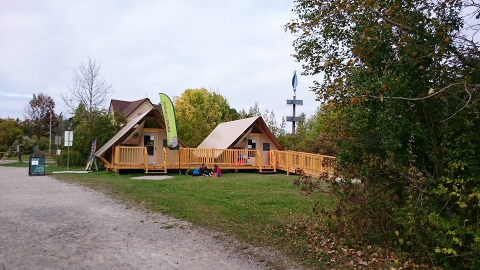
最近建ったばかりの案内所。地図がもらえる。
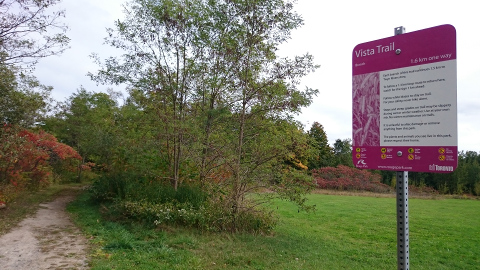
ハイキング開始はVista Trailから。
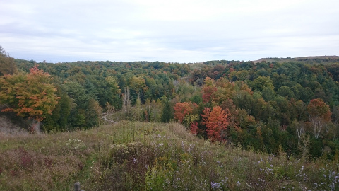
すっかり秋景色。
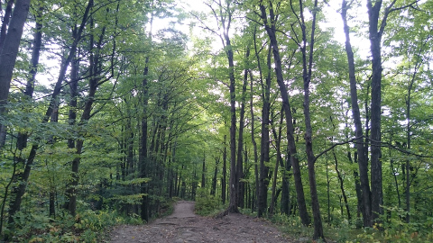
景色を堪能した後は森の中へ。このような景色が延々と続く。しんと静まりかえった森のなかをずんずん進む。すれ違うひともほとんどなく、生き物の気配といえばときおりみかけるリスや鳥のみ。
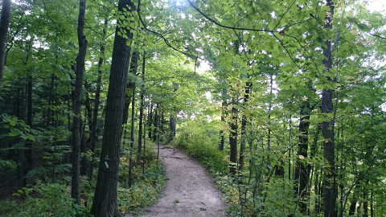
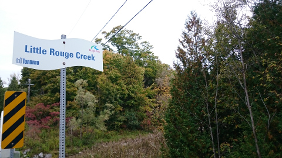
Little Rouge Creek という川へでてVista Trailはおしまい。
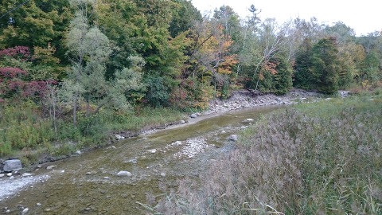
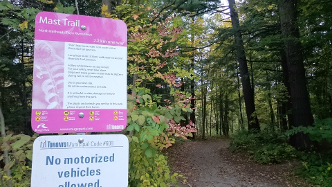
続いてMast Trailへ。
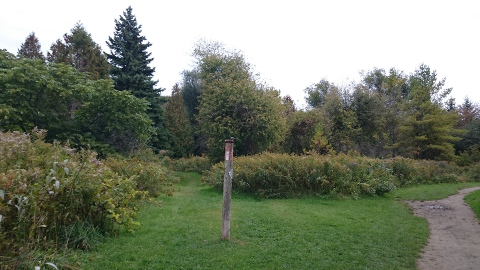
起伏のある森のなかを違うひひたすら歩いていき、すれ違うひとも増えてきて、ぱっとひらけてきたとおもったらトレイルの終わりあたり。↑の建てられた棒の先端に置かれたお皿のなかに鳥のえさが入っているらしく、しきりに野鳥が飛び交う。青いブルージェイズや赤いカーディナルなど、街中ではおめにかかれない鳥がたくさんみれて、鳥好きの私はもちろんのこと、それほどでもないＪ次郎も大興奮。ただ、警戒心が強いので、近づくとぱっと飛び立ってしまうため、残念ながら携帯で写真を撮ることはできなかった。こうなるとカメラの望遠レンズを買おうかなどという考えが頭をよぎる。
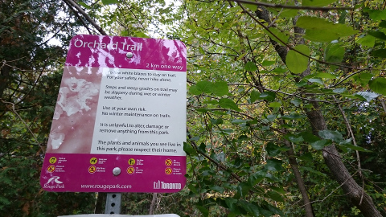
来た道を引き返し、Orchard Trailへ入る。
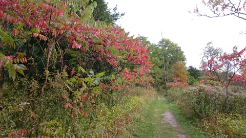
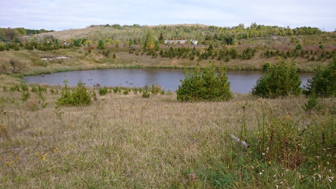
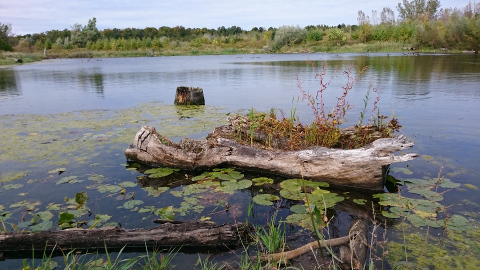
Orchard Trailを終えたところでこの日は終了。
時間の都合で全部のトレイルを制覇できなかったが、それでもこの日の歩数は２３０００歩超えた。大自然のなかをたっぷり歩いて大満足。
ここはぜひまた訪れたい。
水道が引かれていないので、飲み水は全く確保できないし、お手洗いはボックスタイプ。夏の暑い時に一日中滞在するのは厳しいだろうとおもわれるので、涼しい時期に来たほうがいいかもしれない。